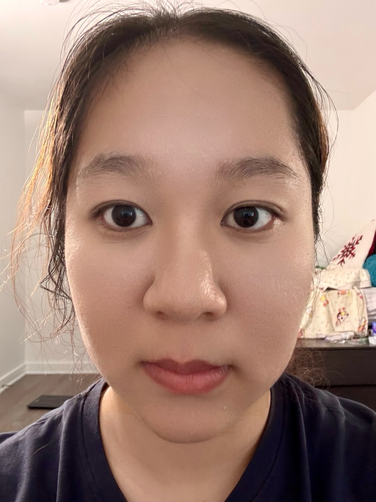
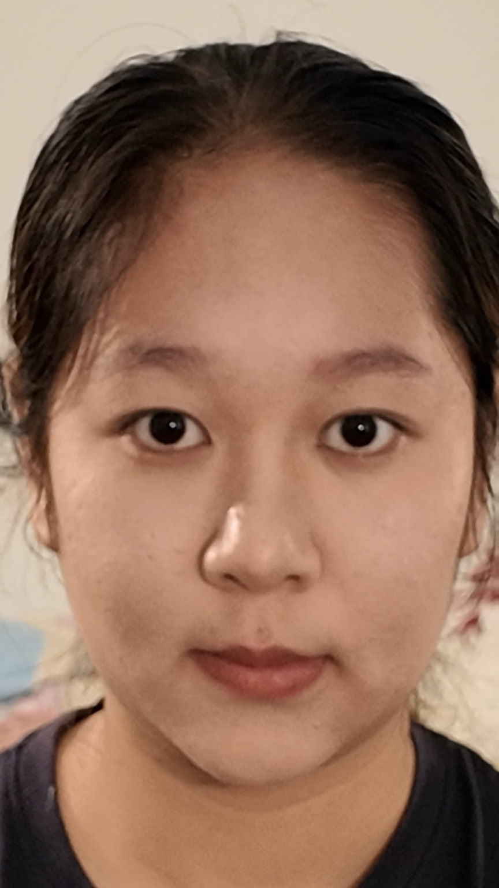
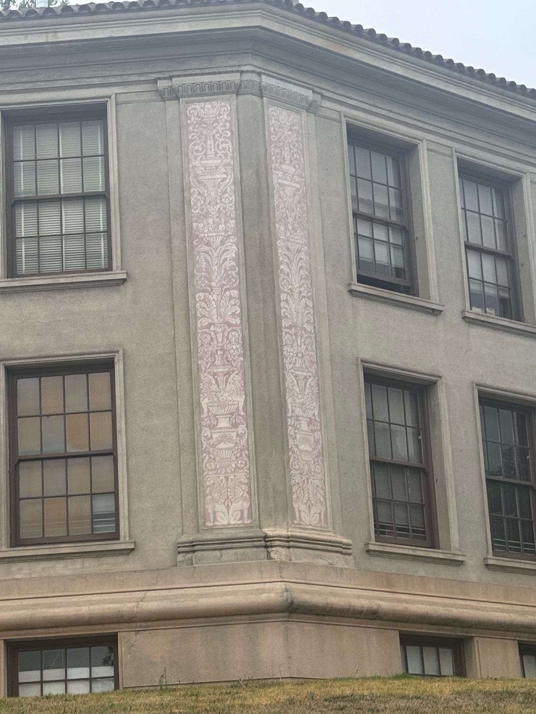
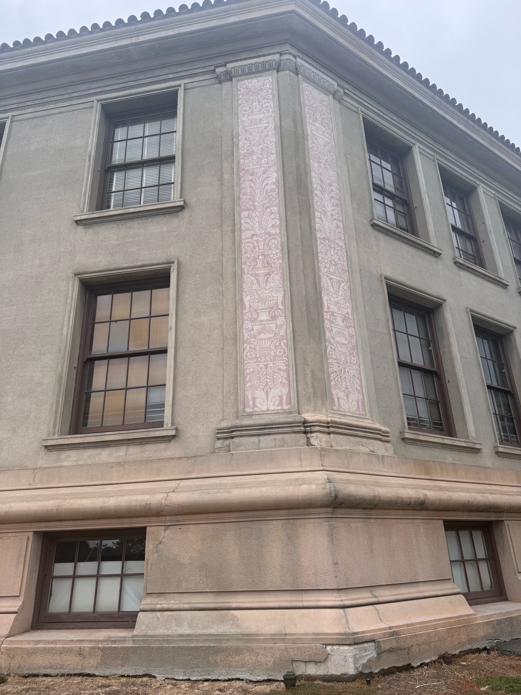
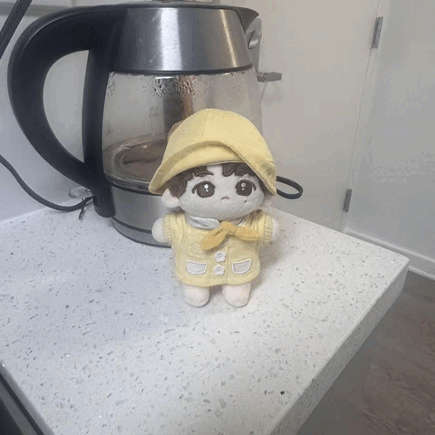

I. The Portrait
Perspective Distortion & Focal Balancing

Close-up Capture
Taken at extremely close proximity without zoom, introducing pronounced facial feature magnification.

Stepped Back & Zoomed
Captured from an extended distance with a 2.3x optical zoom, keeping head size constant while normalizing geometry.
In-Depth Optical Analysis
The stark difference between these two portraits illustrates that perspective distortion Perspective Distortion: A warping of an object's proportions caused by the relative distance of its features to the camera lens. is entirely a function of subject-to-camera distance. When a camera is positioned inches from the face at 1.0x, the distance from the sensor to the nose versus the ears exhibits a massive proportional ratio, projecting central features disproportionately large.
By stepping backward and introducing a 2.3x optical zoom, the absolute distance from the camera to all parts of the face becomes uniform relative to minor depth variations, yielding a natural portrait.
II. Architecture
Perspective Compression in Urban Spaces

Far Distance + Zoom
Captured from afar using a 3.2x telephoto factor, causing the building depth layers to flatten significantly.

Close Distance + No Zoom
Captured closely at 1.0x magnification, revealing deep, aggressive vanishing points and spatial expansion.
Geometric Reasoning
This experiment reverses the scaling logic to demonstrate perspective compression Compression: The visual effect where distant background elements appear larger and closer to foreground subjects, common in telephoto lenses. . In the 3.2x telephoto shot, the absolute distance to the building is exceptionally large compared to the structural depth differences.
Because all points share a nearly identical distance ratio to the lens, they are magnified uniformly, compressing a 3D facade into a flattened, 2D graphic plane. Stepping up closely at 1.0x restores natural convergence lines.
III. The Dolly Zoom
Synthesizing the Cinematic Vertigo Effect

Cinematic Mechanics
The Dolly Zoom creates a psychological illusion by simultaneously executing opposite camera adjustments: moving the physical camera backward while scaling the optical zoom forward.
By tuning the framing so the primary subject remains constant in scale, the background undergoes intense perspective warping—shifting dynamically from a wide spatial field to a heavily compressed backdrop.